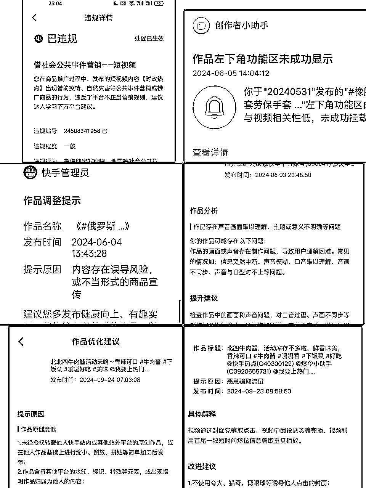

来源：https://zcna4lx0fs4i.feishu.cn/docx/RW0RdWQQGoYvYoxuv2fcS7vhnRb
大家好，我是90后圈友大麦，很荣幸能够把做快手的一些经验和心得分享给大家，希望给正在迷茫中的圈友一点点启发
快手作为短视频平台三巨头之一，流量红利一直巨大，反而一直被忽略。和抖音比起来，视频挂车没有粉丝数量要求，也无需保证金，门槛低；和视频号比起来，快手这里平台包容性也高一些，适合做长期账号，没有那么废号（做过视频号的小伙伴应该都被视频号的“废号”折磨过吧）。
本篇文章结合我做的两个口播方向，同时也为了节省大家学习的时间，直接从0开始拆解了两种口播赛道的详细做法，大家结合自己的情况选择适合自己的赛道。内容较多，建议大家按照大纲指引查看。
做项目，至少给自己2个月的学习和成长的时间，不管是有经验或者小白，从0开始，先跑通0-1，再去突破100，一步一个脚印往前走，切记不要心浮气躁。
快手好物分享的特点之一：素材内容简单，需要堆量。可能有很多小伙伴刷到以下这些封面的短视频，很好奇这种短视频如此泛滥，真的会有人看吗？快手有这么多流量吗？答案是肯定的，确实很多人看，并且破百万流量池层级的也不少。所以做快手好物很重要的一个点就是：在短视频质量有保障的前提下，以量取胜，在做出结果之前，一定是要干苦差的，就是疯狂怼品，剪视频。
快手好物分享的特点之二：链接佣金比较低，和视频号动辄50%+的佣金比例比起来，这一单合下来块儿八毛的，是有点不太像话，但是快手主打一个量大，虽然低客单价低佣金，只要量起来了，佣金也不低了。
最先是看到视频号这类视频的大爆，类似的素材，顺手在快手发了也爆起来了，并且快手对文案的包容度很大，我们发现发在视频号上一会就噶了的素材，在快手上却相安无事，并且可以持续推流很久。
但是也会遇到作品优化通知，严重的情况也会限流什么的，总体来说，打长期账号还是很有优势，账号流量起起伏伏也是正常的，平常心对待。
再比如这个小伙伴，三天突破14.6万佣金。这类口播打的品佣金比例和好物比起来，相对较高，和视频号类似。但是也不意味着所有人都适合做这个赛道，这类口播非常吃文案，有创作能力的朋友值得一试。
安卓手机或者苹果手机，落地支架，补光灯，领夹麦
下载软件：快手，快手极速版，剪映或者快影，醒图，提词器（剪映或者创作猫，快题词等等），抖音，小红书
以下 数字人平台平台即创免费的，蝉境是收费的，大家按需选择：
账号四件套：（头像，昵称，背景图，简介），最简单的方法就是以对标账号为参考
如：xx甄选/ xx好物分享 xx好物推荐 xx好物达人 xx低卡零食 xx美妆种草 xx生活日记 xx好物体验馆 xx零食吃吃
准备一个新的快手账号，打开之后点击首页左上角_---三条杠---点击快手小店---我要开店---选达人入驻---立即入住---点击是个人---下一步上传你的身份证---底下我已同意---人脸验证并入住,最后入驻就成功了，然后就可以了，首页这块有一个买家端，正常是在买家端，可以切换成卖家端
视频教程：快手小店功能介绍和基础操作
除了新号14天看不到小黄车之外，最主要的原因是关联性低掉车，或者是违规掉车
首页左上角三条杠（或我）---者创作者中心---全部服务---账号检测
如何查询视频是否违规.mp4
快手小店-选品中心--点开商品划到中间
这是非常常用的方法，对标账号就是我们的风向标，别人爆了什么品，爆了什么文案，我们有更直接的参照，也可以第一时间借鉴过来。
1.在快手放大镜搜索商品名字口播：比如爆氧粉口播，小炒酱汁口播，发面王口播，注意区别两种口播形式
第一种口播推荐对标账号比如：淼*严选好物，兜*优选，沐*工厂直发，梦*好物优选，燕*清货等等，根据推荐也刷出来的爆款视频筛选
第二种口播推荐对标账号：李师*优选 ，宝*爱做菜，七*甄选，刘*师，万*团圆
新人对标账号，找粉丝低于3万，销量几千上万的号模仿，看他们带什么品，自己跟着带。关注10-20个左右。
发现页有很多视频，只点点赞多的爆款，比如点赞高于1000的，平台会推更多爆款视频过来。
文案可以自己写，也可以搬运，素材文案可以通过各种短视频平台来获取，比如抖音，快手，视频号等等，也可以刷对标账号，去提取别人的爆款文案
快手用户群体中老年人居多，二三线城市，农村人，和视频号，拼多多用户群体重叠度很高，视频号爆款文案直接搬运到快手，仅需做去重处理，可以使用“豆包”修改文案
用到的去水印工具:微信搜“去水印”，出来一堆免费小程序，比如轻抖小程序，功夫去水印等等，还有快影APP
修改文案最主要的目的是增加文案的原创度和删除违禁词和违规词，一般抖音和视频号搬运的文案，可以不用大幅度修改，保证无违规词，替换一些词汇，调整一下内容顺序
平台不允许的内容是特别容易违规的，每个平台的规则差不多，但是每个平台的包容度不一样，快手的违禁词也很严格，比如“买到就是赚到”，极限词“世界第一”，全行业第一，国际驰名商标，史无前例，绝无仅有，等等（下方附违禁词）
一般用到的软件（剪映，快题词，快影）
一个落地支架，一个落地补光灯（白天光线好可以不用补光灯），绿植装饰，或者白背景，户外，也可以是纯色背景（最好是绿幕）拍摄完再抠图换背景处理
方法一：可以使用“剪映”里的提词器，需要开会员
方法二：文案先保存在“快题词”软件，悬浮，再打开相机或者用快手发视频的地方开始录制
拍摄时选择背景干净好看的，或者户外也行，不建议黑色和红色衣服，光线明亮不曝光，手机距离一臂远，头像上方留白合适，声音饱满清晰充满激情，抑扬顿挫，不要毫无感情的读文案，眼神生动有交流，表现力要强，说话时可以配合手部动作
拍摄前熟读文案，练习几次，找找感觉
能自己口播就不要用数字人，建议大家优先使用真人，顺应平台发展才能走得长久。
即创网址https://aic.oceanengine.com/login
此种带货模式和口播带货有很大区别，是完全不同的风格，一般文案框架三部分，“引入产品+产品特征和卖点介绍+逼单”，这种口播是比较常见的好物混剪口播带货方式，对作品数量要求比较高：新手期一个账号一天保证不低于五个作品，成熟期10个左右作品，需要靠量去堆，并且也不建议断更，坚持每天输出优质作品，只有坚持付出才会开花结果。
举例：出镜口播混剪视频
举例：不出镜口播混剪
①刷快手推荐页找到爆款短视频（三天内的大爆款，非常重要，我们要做的就是快速跟爆款，吃第一波流量），复制链接或者素材群里提供的爆款文案链接
②然后用小程序“轻抖”提取文案，或者用“快影”文案提取
③文案修改去重，建议用抖音和快手文案相结合，加上自己的文案，修改30%左右
混剪前准备.mp4
先识别字幕操作（文字容易被画中画覆盖，需要调整图层）
剪辑第一步.mp4
后识别字幕操作（视频剪辑完了之后再识别字幕，注意识别出画中画视频的文案，更简单一些）
字幕第二种.mp
封面（人物头像+产品主图，溶图，蒙版，线性反选，20%左右），铺满，比例9:16，可以选择自拍，或者美女图片（要去水印），加标题，价格，等等，一般三行为主（附图）
用原视频出镜人做封面
剪辑第二步（封面制作1）.mp4
小红书美女头像封面
剪辑第二步（封面制作2）.mp4
①真人出镜剪辑：
产品素材和实拍视频剪辑好，分段匹配，比如：讲到做菜的视频，切菜的文案配切菜的视频，炒菜的时候配炒菜的视频，中间出现若干段真人出镜画面，其余大部分为产品视频，注意视频协调和美观
②不出镜混剪：封面一般用美女头像或真人实拍，小红书搜索后去水印
和真人出镜差不多，无非就是把真人出镜部分换成全部混剪，在剪辑的时候，也可以把口播原素材放在画中画上，方便处理
③去重:画中画，蒙版，贴纸，特效，字幕，声音调大，变速处理等等
④可以保留爆款视频的开头部分，俗称“爆款前三秒”
剪辑第三步.mp4
这种账号目前以全品类为主，全品类账号也有细分赛道，比如美食类，服装类，母婴类，养生类等等，一个账号上面百货，吃的，用的，穿戴的都带，比如一个账号可以带防晒帽，大豆皮，腰带，抹布，抽纸，海带等等，全品类账号的优势在于：什么品有热度，就可以去测这个品是否适合自己的账号，一旦测出来之后就可以去及时跟品。
再细分一下就是，有的号带吃的出单，就可以在吃的这个大范围内选品，有的号带裤子出单多，就可以多选裤子类的产品，以此类推。。。
（这30单选择低价优质品，提高信用分）
①低客单价 （全网大爆品，谁发谁爆的，不管是新号也可以跟，大爆品不分新号老号）
②破价品
③三天内爆品
④受众群体广
按照上述方法发了一周左右，已经破播放了，就可以低价品和中客单价，高客单价品穿插排品，因为低客单价品更大概率品质不好，会拉低信用分，佣金也低
选品常用方法是刷推荐页，和快分销排行榜
百货类，服装类，鞋类，生鲜类，短裤，冰丝裤，短袖，裙子，老北京布鞋，凉鞋，抽纸，钢丝抹布，保鲜膜袋，等等，客单价的低价爆品
秋季换季品，服装，饮食相关的，节假日爆品
夏季冰丝凉席，遮阳防晒品，驱蚊用品，茶类（罗汉果茶，茯苓茶等等），开学季，春节等等
跟爆品，特别是三天内的爆品，低粉爆款，及时去跟，一般第一波流量是最大的，我们的目的就是吃第一波流量，成为被别人跟的对象。
全品类去排测，比如一天五条，可以发食品，百货，服装等等
举例：一个账号第一天发了五个品：小炒酱汁，爆氧粉，防晒帽，冰丝裤，黑米饼干
第二天看流量情况，流量高的品可以再补2-3条新视频素材，再继续发其他品。
比如防晒帽和冰丝裤流量比较好，那第二天就可以继续发2条防晒帽和冰丝裤，再加三个新品
第三天再看前两天的作品流量，以此类推，只要某个品出单量在增加，我们就可以多补一些视频去接流量
一个类别的品爆单了，可以继续带这类品，但是防止账号跟偏，千万不要长期死磕一个单品，因为一个品的热度有限，一般三天-一个星期左右，比如一个账号一直跟冰丝裤，每天都发冰丝裤，最终可能会导致这个账号只有冰丝裤出单，带其他品不出单的情况，但是短期内这个出单的品一定要多跟。
快手是量大出奇迹的平台，发的视频越多，测的品越多，才有可能爆单；出单的品，及时跟上补视频，出的多，补的多
补视频文案改一下，开头结尾都可以改，视频素材也可以找最新的，尽量减少同质化。
实拍作者如何拍摄就不再赘述，详见第六节。
实拍口播举例：
数字人口播举例：
视频添加素材用抖音快手去搜索，根据视频内容，找相关素材：
比如小炒酱汁，就找做菜视频；洗衣机爆氧粉就找清洗洗衣机的相关视频；脆皮油条就找炸油条过程的视频，等等
要求：①每个作品不重复发，有的号可以发两遍，但是发多了可能被判批量营销而直接限流
②每个文案调整一下
③每个视频可以重新生成或拍摄
④每天不断更
⑤一天一个账号发至少三条口播作品，如果流量不错，建议多发，把生产力拉满
发布时间：最好选择早中晚时间段
账号启动的时候，每一天3条左右的视频去测，三天左右，后期可逐渐增加作品数量，如果单条流量能破万，可以再优化一下文案，再测两到三天，能跑出来的视频，继续优化
但是在实际操作过程中，千人千号，每个号都大不相同，没有统一标准，对我们的文案和效率要求比较高，随着做账号经验的积累，慢慢摸清楚了自己账号的脾气，就会越来越顺手
视频大爆的时候，流速特别快，点赞一分钟好几个，甚至十几个以上，这个时候第一时间开播接流量，暂时不用急着补视频，但是要提前准备好视频，等到感觉流速下降了，点赞速度高峰期已经过了，要及时补视频
好物类直播相对较少，主要是短视频挂车出单，短视频流量不错的时候是可以直播的，多一个变现的渠道，就多一分收货。
口播类主要是直播转化，直播时间自由，但是有时候为了提高效率，我们一般看短视频点赞一分钟三个以上，并且短视频播放量一直持续增长的时候，就开播接流量，短视频引流到直播间进行成交，这一点和视频号极为相似。
目前有真人直播，数字人直播，不出镜直播，代播多种形式
开播前准备和开播流程：直播场景搭建（准备人，货，场）出镜人，样品，场景
直播话术（逼单话术和通用话术）：根据在线人数和进人速度调整
需要旋转台，摆上样品，可以口播直播话术，或是录一段音频，在直播间循环播放，有违规风险
第一种是免费数字人，电脑下载快手直播伴侣，先用数字人生成一段直播画面视频，剪辑方法和视频剪辑类似：
第二种是付费的数字人，快手官方的女娲数字人，每天需要配合付费投流，否则会被清退，目前大多数是第三方服务商会提供收费的服务，服务商会帮助搭建直播间，开通白名单等等
女娲直播间
https://zs.kwaixiaodian.com/page/helper
目前做好物赛道的对口碑分要求高一些，视频挂车对数据的考核是非常重要的，所以选品的时候要考虑店铺评分和商品评价。
但是由于口播类视频较少挂车，对口碑分就不那么重视，甚至从来没有关注过这个指标。
好物类违规一般是同质化，原创度低，虚假宣传，恶意骗取流量，违反电商规则，内容错在误导风险等等，这种大多数只对单个视频进行限制，比较严重的是对账号进行限流或者罚款，目前处理方法是先申诉，再人工客服沟通，卖惨+正能量，先承认自己是初到快手创作，不小心犯错，后面一定积极改正错误，创作出更优质的原创作品，大多数的处理结果还是比较人性化的。

1、好物赛道：
这是很常规的带货方式，目前做的人比较多，个人感觉没有抖音卷，并且没有抖音严格，在我们做快手的朋友里面流行这样一句话“没有起不来的号，只有起不来号的人”，是因为非常考验人的执行力，执行力没问题，就成功了一半，剩下的交给选品和剪辑，量变产生质变。
好物赛道因为是视频挂车出单，对直播没有什么要求，对于没有时间直播的人比较友好，主要精力放在选品和剪辑上面。
2.口播赛道：
走实拍路线的小伙伴，文案能力又强的毫无疑问一定要尝试一下，这个是没有啥成本的，顺手发发，万一爆了呢，当然，如果你有很不错的打品思路，找到一个有痛点又有卖点的品，再配合文案，用几个号去测，那是有很大机会的。这一切也都离不开执行力三个字。
如果你不擅长实拍，用数字人也是可以的，这对大多数人都比较友好，节省了时间，可以有更多的时间用来调整文案和测品，打矩阵账号。
这个赛道通常要配合直播，圈友们可以根据自己实际情况来选择适合自己的赛道。
如果剪辑效率比较高，或者有搭档可以配合，是可以多账号矩阵操作，快手比较费时间的就是剪辑视频，两种赛道都适合矩阵。
口播类大多是模板化的东西，打的品单一，找素材比较省事，瞄准一个品，多个账号多个文案去测，机会还是很大的。
但是好物类有个弊端就是品类多，剪辑的时候需要每个品都要找素材，工作量就稍微繁杂一点，好在好物类的视频都比较短，大多数是一分钟左右的，并且对直播不是硬性要求，没有时间直播的小伙伴就比较适合了
我的分享暂时就到这里啦，还有很多很多的话，说不完了，如果能给圈友带来一点帮助，这是对我莫大的鼓舞，希望大家未来的日子里，身体健康，财源滚滚